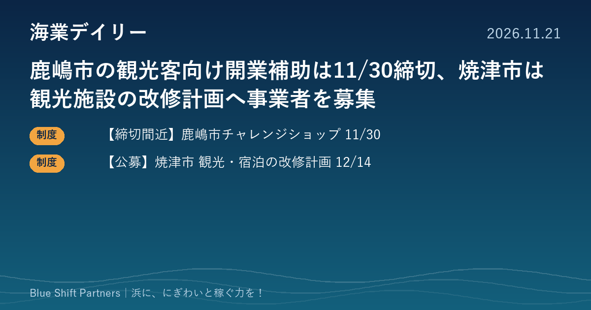

2026.11.21
鹿嶋市の観光客向け開業補助は11/30締切、焼津市は観光施設の改修計画へ事業者を募集

本日は、観光客を呼び込む店づくり・施設づくりに使える2つの制度をお届けします。茨城県鹿嶋市の新規開業向け補助金は、申請期限が11月30日に迫っています。静岡県焼津市は、宿泊施設や観光施設の改修を市の計画に盛り込むため、12月14日まで事業者を募っています。
【締切間近】鹿嶋市「チャレンジショップ支援事業補助金」、観光客向けの新規開業を支援（11月30日まで）
茨城県鹿嶋市は、市が定める対象区域で、観光客の集客が見込める店を新たに開く個人・法人に補助金を出しています。対象は小売・飲食・宿泊・サービスなどの業種で、令和8年度内に開業し、1年以上、週3日以上営業することなどが条件です。店舗の改修・建築費は2分の1・上限300万円、コンサルタント等から伴走支援を受ける経営支援費は10分の10・上限200万円です。申請は11月30日（月）までに市役所第2庁舎の商工観光課の窓口へ書類を提出する形で、鹿嶋市商工会への加入（予定を含む）や、コンサルタント等との契約（見込みを含む）も要件になっています。
ここがポイント：海の幸を出す飲食店や土産物店など、観光客を相手にした店を開く計画がある方には、改修費と開業前後の専門家の支援費を合わせて手当てできる制度です。対象区域の範囲は市の資料で確認が必要なため、検討中の方はまず商工観光課に問い合わせるのが近道です。
出典：鹿嶋市 経済振興部商工観光課「令和8年度鹿嶋市チャレンジショップ支援事業補助金 募集案内」（2026-10-26）
【公募】焼津市、宿泊施設・観光施設の高付加価値化に向けた改修を市の計画に盛り込む事業者を募集（12月14日まで）
静岡県焼津市は、2027年度に策定する予定の周遊型の観光促進計画に向けて、2027〜2029年度に宿泊施設や観光施設の改修を行う事業者を募っています。対象は、旅館業法の許可を持つ宿泊施設（民泊は除く）と、飲食店・土産物屋・水族館・道の駅など旅行者が訪れる観光施設で、インバウンド向けの改修や、空き家などを宿泊・観光施設に変えるリノベーションが対象です。県の補助は3分の1以内（市町の補助は6分の1）で、県補助額は1施設あたり下限200万円、上限は区分により600万円または3,300万円とされています。今回は計画に盛り込むための事前の提出で、採択や補助額は約束されず、市の計画が採択された後に改めて交付申請が必要です。提出期限は12月14日（月）17時で、提出先は市役所本庁舎6階の商工観光課観光交流担当です。
ここがポイント：漁港近くの食堂や直売所、民宿・旅館が、外国人観光客を迎えるための改修や、空き家を使った宿づくりを3年がかりで進める場合の財源の候補になり得ます。計画に載らなければ補助の対象にならないため、少しでも改修を考えている事業者は、期限までに市へ相談しておくと選択肢を残せます。
出典：焼津市 経済部商工観光課「観光地域高付加価値化整備事業費補助金」（2026-11-09）
観光客が「来る理由」をつくるには、食べる場所、買う場所、泊まる場所が欠かせません。どちらの制度も、浜の食や宿を観光の目玉に育てる準備に使える可能性があります。締切まで日がないものもあるため、まずは市の窓口に一本電話を入れて、自分の計画が対象になるかを聞いてみることをおすすめします。